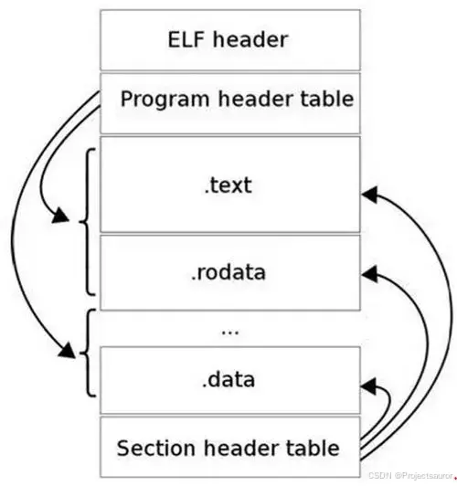
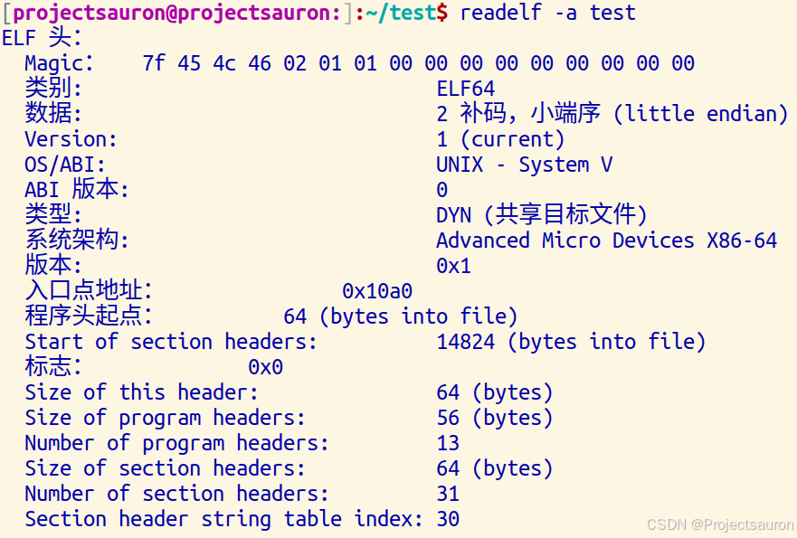
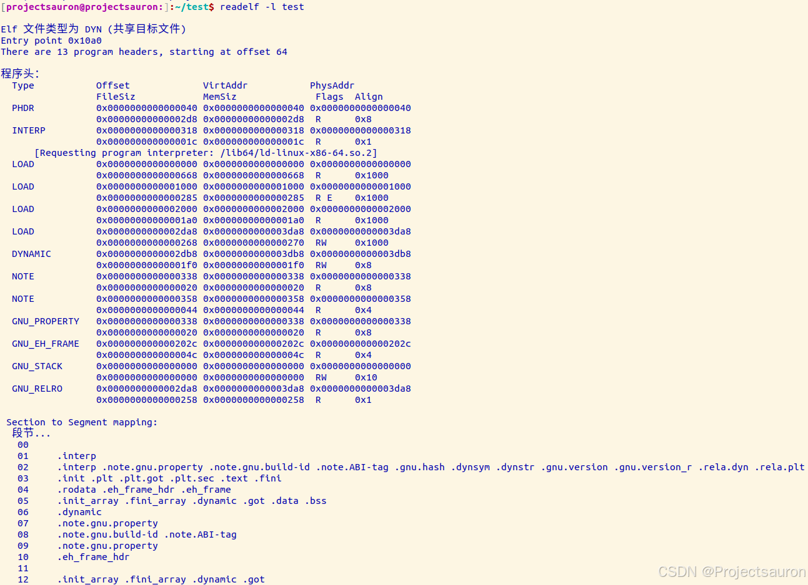
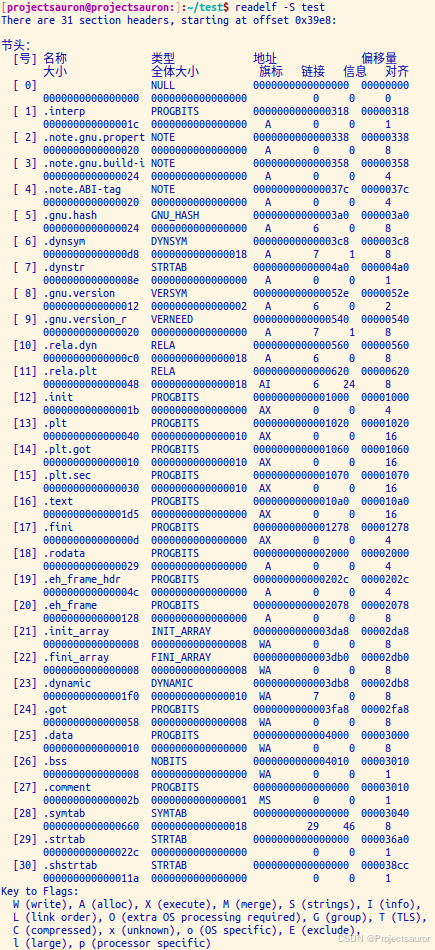

ELF 文件格式
@toc
一、概述
ELF（Executable and Linkable Format）是一种常用的可执行文件和可链接库格式。它是一种通用的二进制文件格式，用于在 Unix 和类 Unix 系统上进行可执行文件和库的存储和传输。
二、种类
ELF文件主要有四种类型
- 可执行文件（Executable File）：包含可执行的机器代码，可以直接在操作系统中运行。
- 可重定位文件（Relocatable File）：机器代码和数据，但其地址空间是相对的，需要进行重定位才能正确运行。可重定位文件通常用于静态库和动态库的编译过程。
- 共享对象文件（Shared Object File）：这种类型的 ELF 文件是一种动态链接库（DLL），它包含了可共享的代码和数据，可以在运行时被多个进程共享。
- 核心转储文件（Core Dump File）：这种类型的 ELF 文件是操作系统在程序崩溃或异常终止时生成的，它包含了程序在崩溃时的内存状态和寄存器信息，用于调试和故障排除。
在内核中有如下定义（/include/uapi/linux/elf.h）：
1 |
三、布局

下面是ELF文件的组成格式的详细介绍：
- ELF 头部（ELF Header）：ELF文件的开头是一个固定大小的ELF头部，它包含了文件的基本信息和属性，如ELF文件的类型、目标体系结构、入口点地址、程序头表和节头表的偏移和大小等。
- 程序头表（Program Header Table）：程序头表是一个包含多个程序头表条目（Program Header Entry）的表。每个程序头表条目描述了如何将文件中的段（Segment）加载到内存中的某个位置。段是一个逻辑上相关的一组节，如代码段、数据段等。程序头表主要用于可执行文件和共享对象，对于可重定位文件，它可能为空。
- 节头表（Section Header Table）：节头表是一个包含多个节头表条目（Section Header Entry）的表。每个节头表条目描述了一个节的属性和位置信息，如节的名称、类型、大小、在文件中的偏移等。节头表存储了 ELF 文件中所有的节，如代码节、数据节、符号表节等。
- 节区（Section）：节是 ELF 文件中的==基本组成单位==，它包含了特定类型的数据。ELF 文件的各种信息和数据都存储在不同的节中，如代码节存储了可执行代码，数据节存储了全局变量和静态数据等。节区可以包含额外的属性和标记，如只读、可执行等。
- 符号表（Symbol Table）：符号表是一个特殊的节，它包含了程序中定义和引用的符号（如变量、函数等）的信息，如符号的名称、类型、地址等。符号表在链接和调试过程中非常有用。
- 字符串表（String Table）：字符串表是一个特殊的节，它包含了各种节的名称、符号表的字符串等。它通过索引来引用其他节或符号的名称，提供了更方便的字符串访问方法。
可以看到，其实 sections 和 segments 占的是一样的地方。这是从链接和加载的角度来讲的。左边是链接视图，右边是加载视图，sections 是程序员可见的，是给链接器使用的概念，而 segments 是程序员不可见的，是给加载器使用的概念。一般是一个 segment 包含多个 section。
链接视图是以节（section）为单位，执行视图是以段（segment）为单位。链接视图就是在链接时用到的视图，而执行视图则是在执行时用到的视图。目标文件
.o里的代码段.text是 section（汇编中.text同理），当多个可重定向文件最终要整合成一个可执行的文件的时候（链接过程），链接器把目标文件中相同的 section 整合成一个segment，在程序运行的时候，方便加载器的加载。
四、组成结构
下面是定义中的各个类型数据结构的大小：
| Name | Size | Alignment | Purpose |
|---|---|---|---|
Elf32_Addr |
4 | 4 | Unsigned program address |
Elf32_Off |
4 | 4 | Unsigned file offset |
Elf32_Half |
4 | 4 | Unsigned medium interger |
Elf32_Word |
4 | 4 | Unsigned interger |
Elf32_Sword |
4 | 4 | Signed interger |
1 | typedef uint32_t Elf32_Addr; |
1、ELF header
1 |
|
下面是 test 的 ELF header 结构各个数据成员对应的值：

从输出可以看到这个 ELF 文件的基本消息，比如 Section header table 有 31 个 section；从 14824 byte 处开始，Program header table 中有 13 个 segment，每个 56 byte。
e_ident[EI_NIDENT]
文件的标识以及标识描述了 ELF 如何编码等信息。
1 | Magic： 7f 45 4c 46 02 01 01 00 00 00 00 00 00 00 00 00 |
| 名称 | 取值 | 目的 |
|---|---|---|
| EI_MAG0 | 0 | 文件标识(0x7f) |
| EI_MAG1 | 1 | 文件标识(E) |
| EI_MAG2 | 2 | 文件标识(L) |
| EI_MAG3 | 3 | 文件标识(F) |
| EI_CLASS | 4 | 文件类 |
| EI_DATA | 5 | 数据编码 |
| EI_VERSION | 6 | 文件版本 |
| EI_PAD | 7 | 补齐字节开始处 |
| EI_NIDENT | 16 | e_ident[]大小 |
e_type
该数据类型是 uint16_t 数据类型的。通过字段查看，可以看到这个值为 00 02。表格定义如下：
| 名称 | 取值 | 含义 |
|---|---|---|
| ET_NONE | 0x0000 | 未知目标文件格式 |
| ET_ERL | 0x0001 | 可重定位文件 |
| ET_EXEC | 0x0002 | 可执行文件 |
| ET_DYN | 0x0003 | 共享目标文件 |
| ET_CORE | 0x0004 | Core文件(转储格式) |
| ET_LOPROC | 0xff00 | 特定处理器文件 |
| ET_HIPROC | 0xffff | 特定处理器文件 |
e_machine
由字段可以看到为 00 03，关于这个字段的解析，基本上就是表示该elf文件是针对哪个处理器架构的。
下面只列出几个常见的架构的序号
| 名称 | 取值 | 含义 |
|---|---|---|
| EM_NONE | 0 | No machine |
| EM_SPARC | 2 | SPARC |
| EM_386 | 3 | Intel 80386 |
| EM_MIPS | 8 | MIPS I Architecture |
| EM_PPC | 0x14 | PowerPC |
| EM_ARM | 0x28 | Advanced RISC Machines ARM |
2、程序头表和程序头表条目
程序头表是从加载的角度来看 ELF 文件的，目标文件没有该表，每一个表项提供了各段在虚拟地址空间和物理地址空间的大小、位置、标志、访问权限和对其方面的信息。从上面知道，test 中有 13 个 segment，如下图：

下面对其中的一些进行简单的介绍。
PHDR保存程序头表INTERP指定在程序已经从可执行文件映射到内存之后，必须调用的解释器。在这里，解释器并不意味着二进制文件的内容必须由另一个程序解释。它指的是这样一个程序：通过链接其他库，来满足未解决的引用。通常/lib/ld-linux.so.2、/lib/ld-linux-ia-64.so.2等库，用于在虚拟地址空间中插入程序运行所需要的动态库。对几乎所有的程序来说，可能 C 标准库都是必须映射的。还需要添加的各种库包括，GTK、数学库、libjpeg 等等LOAD表示一个需要从二进制文件映射到虚拟地址空间的段。其中保存了常量数据（如字符串），程序的目标代码等。DYNAMIC段保存了由动态链接器（即，INTERP中指定的解释器）使用的信息。NOTE保存了专有信息
一个 entry 对应一个 segment，由如下的数据结构表示
1 | typedef struct |
3、节头表和节头表条目
节表头包含了文件中的各个节，每个节都指定了一个类型，定义了节数据的语义。各节都指定了大小和在二进制文件内部的偏移。从上面知道，test 中有 31 个 section，如下图：

下面对其中的一些进行简单的介绍:
.interp保存了解释器的文件名，这是一个ASCII字符串.data保存初始化的数据，这是普通程序数据一部分，可以再程序运行时修改.rodata保存了只读数据，可以读取但不能修改。例如，编译器将出现在printf语句中的所有静态字符串封装到该节.init和.fini保存了进程初始化和结束所用的代码，这两个节通常都是由编译器自动添加.gnu.hash是一个散列表，允许在不对全表元素进行线性搜索的情况下，快速访问所有的符号表项
section 的结构定义如下：
1 | typedef struct{ |
4、系统固定的 section
| 名称 | 类型 | 属性 | 含义 |
|---|---|---|---|
| .bss | SHT_NOBITS | SHF_ALLOC + SHF_WRITE | 包含将出现在程序的内存映像中的为初始化数据。根据定义，当程序开始执行，系统将把这些数据初始化为 0。此节区不占用文件空间。 |
| .comment | SHT_PROGBITS | (无) | 包含版本控制信息。 |
| .data | SHT_PROGBITS | SHF_ALLOC + SHF_WRITE | 这些节区包含初始化了的数据，将出现在程序的内存映像中。 |
| .data1 | SHT_PROGBITS | SHF_ALLOC + SHF_WRITE | 这些节区包含初始化了的数据，将出现在程序的内存映像中。 |
| .debug | SHT_PROGBITS | (无) | 此节区包含用于符号调试的信息。 |
| .dynamic | SHT_DYNAMIC | 此节区包含动态链接信息。节区的属性将包含 SHF_ALLOC 位。是否 SHF_WRITE 位被设置取决于处理器。 | |
| .dynstr | SHT_STRTAB | SHF_ALLOC | 此节区包含用于动态链接的字符串，大多数情况下这些字符串代表了与符号表项相关的名称。 |
| .dynsym | SHT_DYNSYM | SHF_ALLOC | 此节区包含了动态链接符号表。 |
| .fini | SHT_PROGBITS | SHF_ALLOC + SHF_EXECINSTR | 此节区包含了可执行的指令，是进程终止代码的一部分。程序正常退出时，系统将安排执行这里的代码。 |
| .got | SHT_PROGBITS | 此节区包含全局偏移表。 | |
| .hash | SHT_HASH | SHF_ALLOC | 此节区包含了一个符号哈希表。 |
| .init | SHT_PROGBITS | SHF_ALLOC + SHF_EXECINSTR | 此节区包含了可执行指令，是进程初始化代码的一部分。当程序开始执行时，系统要在开始调用主程序入口之前（通常指 C 语言的 main 函数）执行这些代码。 |
| .interp | SHT_PROGBITS | 此节区包含程序解释器的路径名。如果程序包含一个可加载的段，段中包含此节区，那么节区的属性将包含 SHF_ALLOC 位，否则该位为 0。 | |
| .line | SHT_PROGBITS | (无) | 此节区包含符号调试的行号信息，其中描述了源程序与机器指令之间的对应关系。其内容是未定义的。 |
| .note | SHT_NOTE | (无) | 此节区中包含注释信息，有独立的格式。 |
| .plt | SHT_PROGBITS | 此节区包含过程链接表（procedure linkage table）。 | |
| .relname .relaname | SHT_REL SHT_RELA | 这些节区中包含了重定位信息。如果文件中包含可加载的段，段中有重定位内容，节区的属性将包含 SHF_ALLOC 位，否则该位置 0。传统上 name 根据重定位所适用的节区给定。例如 .text 节区的重定位节区名字将是：.rel.text 或者 .rela.text。 | |
| .rodata .rodata1 | SHT_PROGBITS | SHF_ALLOC | 这些节区包含只读数据，这些数据通常参与进程映像的不可写段。 |
| .shstrtab | SHT_STRTAB | 此节区包含节区名称。 | |
| .strtab | SHT_STRTAB | 此节区包含字符串，通常是代表与符号表项相关的名称。如果文件拥有一个可加载的段，段中包含符号串表，节区的属性将包含SHF_ALLOC 位，否则该位为 0。 | |
| .symtab | SHT_SYMTAB | 此节区包含一个符号表。如果文件中包含一个可加载的段，并且该段中包含符号表，那么节区的属性中包含SHF_ALLOC 位，否则该位置为 0。 | |
| .text | SHT_PROGBITS | SHF_ALLOC + SHF_EXECINSTR | 此节区包含程序的可执行指令。 |